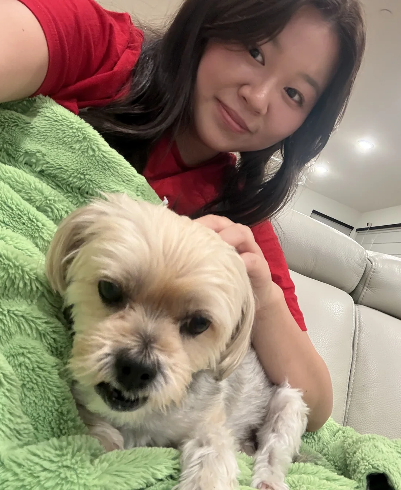
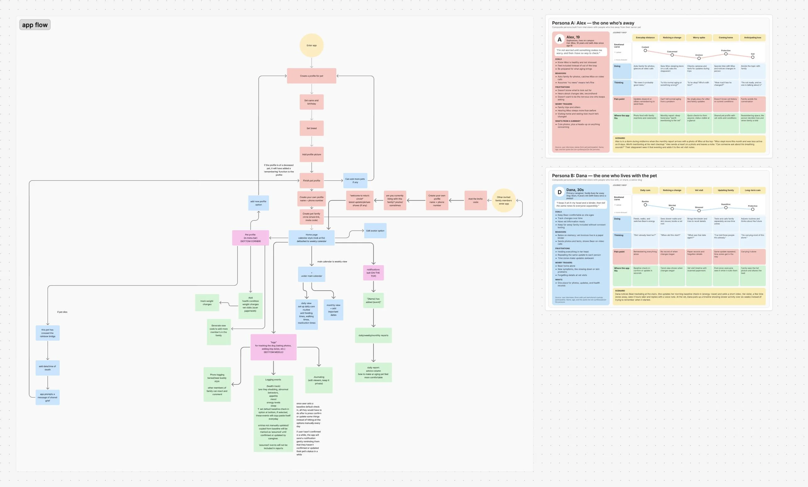
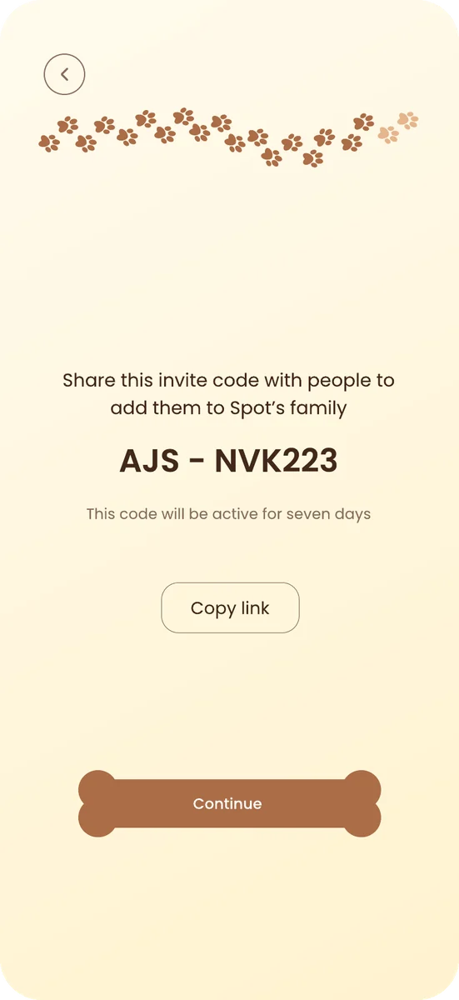
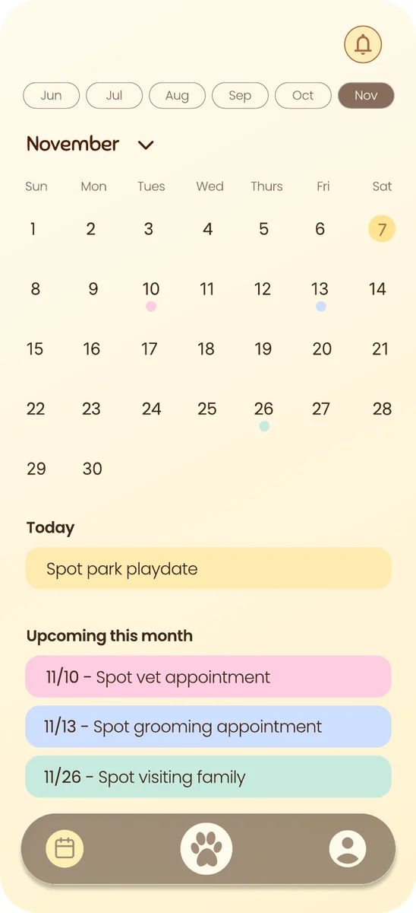
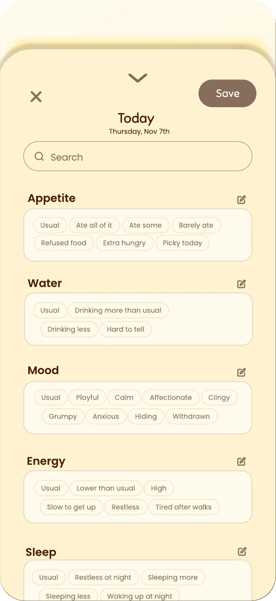
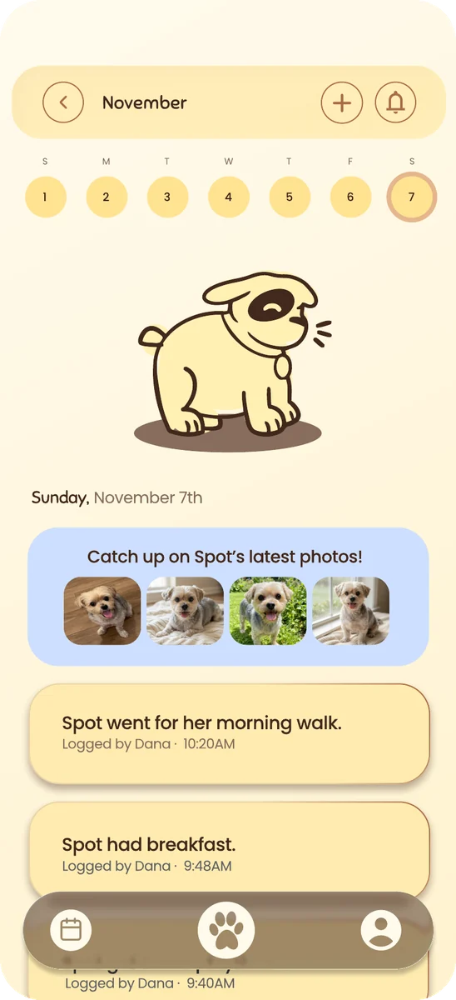
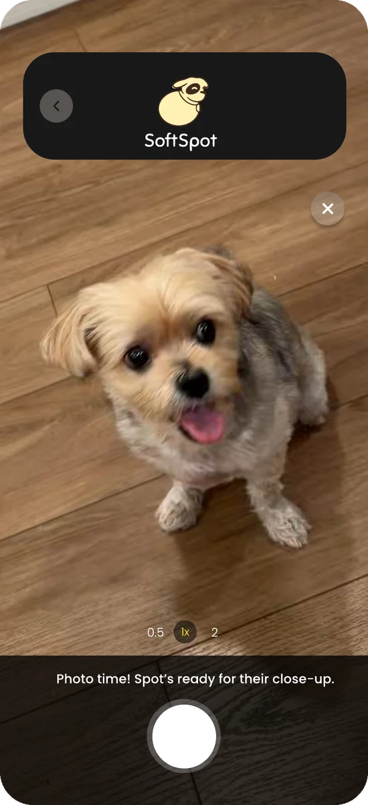
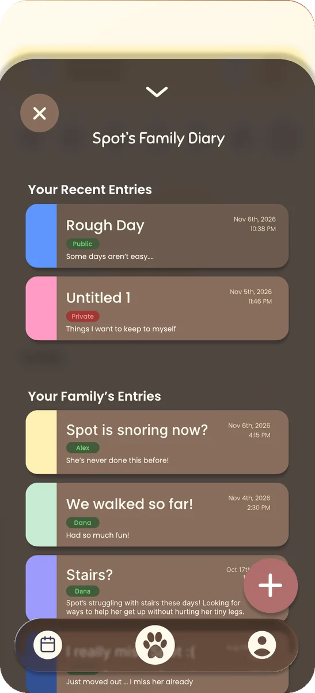
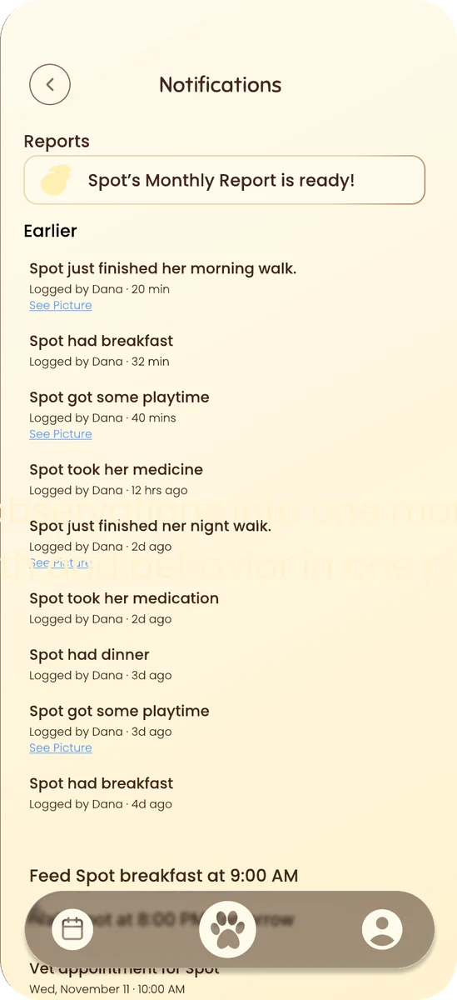
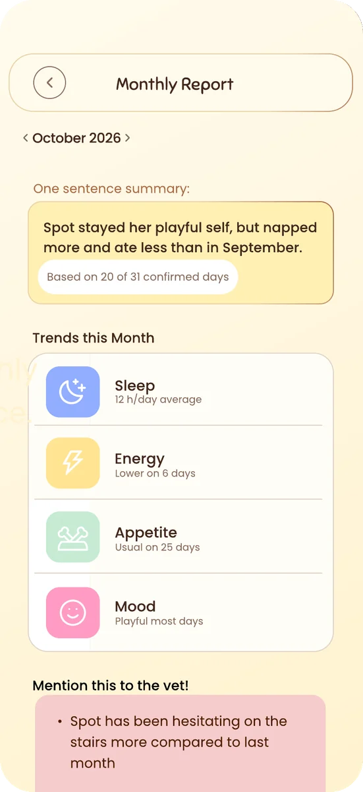

softspot
- event
- WashUX Designathon, 11/6–11/8
- time
- 36 hours
- team
- Soha Mehta, Princess Gallo
- my role
- team leader
- tools
- Figma, FigJam
Friday 11/6 · kickoff
the concept
when a family is spread out, the little changes in an older dog are easy to miss.
the people who care for a pet day to day don’t have one place to see everything: routine, mood, photos. so patterns go unnoticed until they’re big ones.
the design question
how might we help families notice and talk about gradual changes in an aging pet when everyone sees them in different amounts, so that everybody can stay connected through the pet no matter where they are?
my personal connection

my dog mocha is 9, and she lives back home in san diego with my family while i am at school in st. louis.
as she’s gotten older, i’ve been feeling like i’m missing more and more of her life. i only get to know about her increasing lethargy and frequent vet visits from my mom, occasionally. sometimes, i feel like her entire life is just passing by without me there to see it. this is the emotional root of softspot.
what we heard

we talked to 7 pet owners in the first hours. the clearest finding: primary caregivers had no single place to see all their pet’s information.
one participant told us that having it all in one place would help them spot patterns faster and more clearly.
- interviews
- 7
- time spent
- 3 hours
“I just wish that I knew how they were doing health-wise and that they’re happy and not stressed.”
“I usually keep paper copies of the invoices and records in the binder from the vet.”
“Having a shared space where everyone can post pictures and updates anytime would help us feel more connected, even with the time difference.”
“Sometimes they call me and they put him on the camera but I don’t think he can like process iphone screens because he always just like looks completely lost. But I see him and that’s nice.”
who it’s for
two composite personas, built from the interviews: one person who’s away, and one who lives with the pet.
Alex, 19
“I’m not worried until something makes me worry, and then I have no way to check.”
Dana, 30s
“I keep it all in my head and a binder, then tell the same news to everyone separately.”
what we made
one family. one spot. anyone in the family circle can log what they see, and it all builds up into a picture of how the dog is doing.
a family circle
everyone who cares for the dog joins with one code, at home or away from it, and shares one calendar of walks, vet visits and visits home.


daily check-ins
a quick note on appetite, water, mood, energy and sleep, a photo, or a private diary entry. little moments, added to the story.




a monthly report
daily entries build up into a monthly picture: a one-line summary, trends, and what to mention to the vet.


looking back
make the daily check-in faster
the whole idea depends on someone logging every day, and four questions is still a lot on a busy night. i’d shrink it to one tap when nothing’s changed (“same as yesterday”) and only ask more when something’s different.
people who are far away mostly want to know when something changes. i’d give them a short weekly digest instead, so they stay close without a feed of every meal.
softspot is an observation journal, not a replacement for a vet.